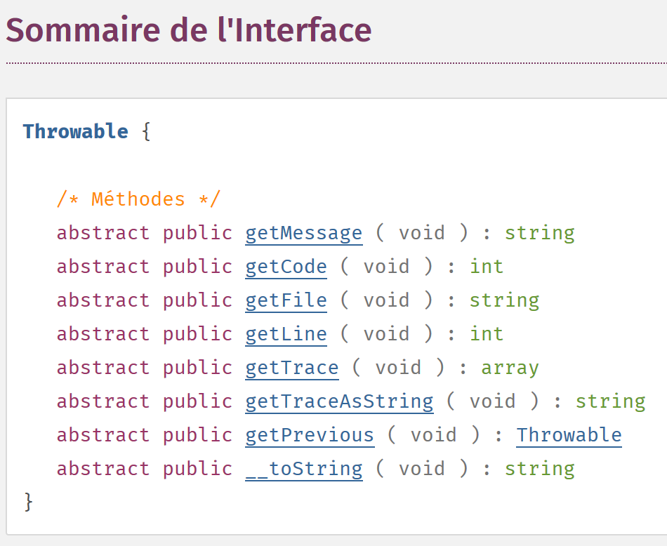

7. Les exceptions et erreurs
Lorsqu’une méthode d’une classe rencontre une erreur irrécupérable (fichier inexistant, base de données non connectée, connexion réseau hors service), elle n’affiche pas une erreur sur une console (fichier, base de données) mais lance une exception. Toutes les exceptions étendent la classe [\Exception]. Outre des exceptions, le fonctionnement interne de PHP émet également des erreurs dont la classe de base est la classe [\Error]. Les deux classes implémentent l’interface PHP [\Throwable].
7.1. L’arborescence des scripts

7.2. L’interface [\Throwable]
L’interface [\Throwable] est la suivante :

Le rôle des méthodes de l’interface est le suivant :

7.3. Les exceptions prédéfinies dans PHP 7
PHP 7 définit plusieurs classes d’exceptions :

- en [1], les exceptions prédéfinies dans PHP ;
- en [2], les exceptions de la bibliothèque SPL (Standard PHP Library) de PHP 7. la bibliothèque SPL est une collection de classes et d’interfaces destinées à résoudre des problèmes rencontrés fréquemment par les développeurs.
7.4. Les erreurs prédéfinies dans PHP 7
PHP 7 définit plusieurs classes d’erreurs :

La classe [\Error] est la classe parent de toutes les erreurs prédéfinies dans PHP. La classe [ErrorException] permet d’encapsuler une instance de la classe [\Error] dans une instance de la classe [\Exception]. Ceci permet d’uniformiser la gestion des erreurs en ne traitant que des exceptions.
7.5. Exemple 1
Le premier exemple [exceptions-01.php] montre à la fois des erreurs PHP et une exception :
<?php
// affichage de toutes les erreurs
ini_set("error_reporting", E_ALL);
ini_set("display_errors", "on");
// code --------
$var=[];
// clé inconnue
print $var["abcd"];
// division par zéro
$var=7/0;
var_dump($var);
// tableau à bornes fixes
$array = new \SplFixedArray(5);
$array[1] = 2;
$array[4] = "foo";
// indice en-dehors des bornes
$array[5]=8;
Commentaires
- ligne 4 : on demande à PHP de signaler toutes les erreurs. Le second paramètre est le niveau d’erreurs demandé :


- ligne 5 : on demande d’afficher les erreurs sur la console ;
- ligne 9 : on accède à un élément inexistant du tableau [$var] ;
- ligne 11 : on fait une division par zéro ;
- ligne 14 : on crée une instance de la classe [SplFixedArray]. Cette classe permet de créer un tableau à bornes fixes et à indices entiers ;
- ligne 18 : on accède à un élément inexistant du tableau ;
Résultats
Commentaires
- ligne 1 des résultats : accéder à une clé inexistante d’un tableau provoque une erreur PHP de niveau [E_NOTICE]. Cela n’interrompt pas l’exécution du script ;
- ligne 3 des résultats : diviser un nombre par zéro provoque une erreur PHP de niveau [E_WARNING]. Cela n’interrompt pas l’exécution du script ;
- lignes 6-9 des résultats : accéder à un indice inexistant d’un tableau [SplFixedArray] provoque une exception de type [RuntimeException] et interrompt l’exécution du script ;
7.6. Gérer les exceptions
Le script [exceptions-02.php] montre comment gérer les exceptions :
<?php
// on affiche toutes les erreurs
ini_set("error_reporting", E_ALL);
ini_set("display_errors", "on");
// on entoure le code par un try / catch
try {
$var = [];
// clé inconnue
print $var["abcd"];
// division par zéro
$var = 7 / 0;
var_dump($var);
// tableau à bornes fixes
$array = new \SplFixedArray(5);
$array[1] = 2;
$array[4] = "foo";
// indice en-dehors des bornes
$array[5] = 8;
// vérification
print "ce message ne sera pas affiché\n";
} catch (\Throwable $ex) {
// \Throwable est l'interface implémentée par la plupart des erreurs et exceptions
// on affiche l'exception
print "erreur, message : " . $ex->getMessage() . ", type : " . get_class($ex) . "\n";
}
Commentaires
- le script est celui qui a été présenté au paragraphe précédent. Seulement maintenant on a entouré le code des lignes 8-19 susceptible de provoquer des erreurs par une structure try / catch : si le code des lignes 8-21 provoque (lance) une exception ou une erreur, celle-ci sera gérée par la clause catch des lignes 22-26 ;
- ligne 22 : le paramètre de la clause [catch] est le type d’exception ou d’erreur que l’on veut gérer. En mettant comme type [\Throwable] qui est une interface, on indique qu’on veut gérer toute instance de classe implémentant l’interface [\Throwable]. Comme toutes les classes d’erreurs et d’exceptions implémentent cette interface, la clause [catch] gère ici toute erreur / exception encapsulée dans une classe ;
- ligne 19 : l’instruction qui déclenche l’erreur et donne naissance à l’exception. Dès qu’il y a exception, il y a branchement sur la clause [catch]. Le code derrière la ligne 19 ne sera donc pas exécuté ;
Résultats
Commentaires des résultats
- lignes 1 et 3 : on retrouve les erreurs de niveau [E_NOTICE] et [E_WARNING]. Ces erreurs ne sont pas des exceptions et ne sont donc pas gérées par la clause [catch] ;
- ligne 5 : on a le message d’erreur écrit dans la clause [catch]. Il s’est donc produit une exception dérivée de [\Exception] ou une erreur dérivée de [\Error]. Nous voyons ici qu’il s’agit de la classe [\RuntimeException] ;
7.7. Paramètres de la clause [catch]
Examinons le script [exceptions-03.php] suivant :
<?php
// on affiche toutes les erreurs
ini_set("error_reporting", E_ALL);
ini_set("display_errors", "on");
// un tableau à bornes fixes
$array = new \SplFixedArray(5);
try {
// indice en-dehors des bornes
$array[5] = 8;
} catch (\Throwable $ex) {
// affichage message d'erreur
print "Erreur 1 : " . $ex->getMessage() . "\n";
}
try {
// indice en-dehors des bornes
$array[5] = 8;
} catch (\Exception $ex) {
// affichage message d'erreur
print "Erreur 2 : " . $ex->getMessage() . "\n";
}
try {
// indice en-dehors des bornes
$array[5] = 8;
} catch (\RuntimeException $ex) {
// affichage message d'erreur
print "Erreur 3 : " . $ex->getMessage() . "\n";
}
try {
// division par 0
intdiv(5, 0);
} catch (\Throwable $ex) {
// affichage message d'erreur
print "Erreur 4 : " . $ex->getMessage() . "\n";
}
try {
// division par 0
intdiv(5, 0);
} catch (\DivisionByzeroError $ex) {
// affichage message d'erreur
print "Erreur 5 : " . $ex->getMessage() . "\n";
}
try {
// division par 0
intdiv(5, 0);
} catch (\Error $ex) {
// affichage message d'erreur
print "Erreur 6 : " . $ex->getMessage() . "\n";
}
try {
// division par 0
intdiv(5, 0);
} catch (\Exception $ex) {
// affichage message d'erreur
print "Erreur 6 : " . $ex->getMessage() . "\n";
}
Commentaires
- lignes 8-31 : 3 façons différentes de gérer l’exception générée par l’utilisation d’un indice incorrect avec la classe [\SplFixedArray]. Nous avons vu que cette erreur générait une exception de type [RuntimeException] ;
- ligne 12 : gère une erreur de type [\Throwable]. C’est valide puisque le type [RuntimeException] dérive du type [\Exception] qui implémente l’interface [\Throwable] ;
- ligne 20 : gère une erreur de type [\Exception]. C’est valide puisque le type [RuntimeException] dérive du type [\Exception] ;
- ligne 28 : gère une erreur de type [\RuntimeException]. C’est la méthode à privilégier puisque c’est le type exact de l’exception générée ;
- lignes 32-62 : 4 façons différentes de gérer l’exception générée par la fonction [intdiv] lorsqu’on passe à celle-ci un diviseur égal à 0. La fonction [ intdiv ( int $dividend , int $divisor ) : int] fait la division entière $dividend / $divisor. Lorsque le diviseur est nul, l’exception [\DivisionByzeroError] est lancée ;
- ligne 35 : on intercepte toute erreur implémentant l’interface [\Throwable]. C’est valide ;
- ligne 43 : on intercepte le type exact de l’erreur : c’est la méthode à privilégier ;
- ligne 51 : on intercepte le type [\Error]. C’est valide puisque la classe [DivisionByzeroError] étend la classe [Error] ;
- ligne 59 : on intercepte le type [\Exception]. C’est invalide car la classe [DivisionByzeroError] n’a aucun lien avec la classe [\Exception] ;
Résultats
7.8. Clause [finally]
La structure try / catch peut avoir un troisième élément et devenir une structure try / catch / finally. Le code de la clausse [finally] est exécuté dans les deux cas suivants :
- la clause [try] ne lance pas d’exception. Elle est alors exécutée entièrement puis l’exécution du code passe à la clause [finally] qui est exécutée entièrement ;
- la clause [try] lance une exception. Elle est alors exécutée jusqu’à l’instruction qui lance l’exception. L’exécution du code passe alors à la clause [catch] qui est exécutée entièrement. Puis l’exécution du code passe à la clause [finally] qui est exécutée entièrement ;
Finalement, le code de la clause [finally] est toujours exécuté. Ce scénario est utile dans le cas suivant :
- dans le [try], le code a obtenu des ressources (fichiers, bases de données, connexions réseau, files d’attente). En général ces ressources sont coûteuses en mémoire. Il faut alors les rendre (on dit le plus souvent fermer) dès que c’est possible ;
- si l’acquisition des ressources a été faite dans le [try], on mettra leur restitution dans le [finally]. Cela nous assure que dans tous les cas (erreur ou pas), les ressources acquises sont restituées au système ;
Le script suivant [exemples/exceptions/exceptions-04.php] nous montre le fonctionnement de la clause [finally] dans diverses situations :
<?php
// ou crée une instance d'exception
$e = new \Exception("Erreur…");
var_dump($e);
// premier test
try {
print "Premier test\n";
throw $e;
} catch (\Exception $ex1) {
print $ex1->getMessage() . "\n";
} finally {
print "Terminé\n";
}
// second test
try {
print "Second test\n";
} catch (\Exception $ex1) {
print $ex1->getMessage() . "\n";
} finally {
print "Terminé\n";
}
// trosième test
try {
print "Troisième test\n";
return;
} catch (\Exception $ex1) {
print $ex1->getMessage() . "\n";
} finally {
print "Terminé\n";
}
Commentaires du code
- ligne 4 : $e est une instance de la classe prédéfinie [\Exception]. On va la lancer à différents endroits ;
- lignes 8-15 : l’exception $e est lancée dans le [try] (ligne 10) ;
- ligne 11 : l’exception [\Exception] est interceptée et son message d’erreur écrit sur la console ;
- lignes 13-15 : la clause [finally] écrit un message. D’après ce qui a été dit précédemment, ce message devrait être tout le temps écrit, erreur ou pas dans le [try] ;
- lignes 18-24 : il n’y a pas d’erreur dans le [try]. On devrait là également passer dans le [finally] ;
- lignes 27-34 : il y a une instruction [return] dans le try et pas d’erreur. On peut se demander alors si on va passer dans la clause [finally]. L’exécution montre que oui ;
Résultats
Examinons un autre cas [exceptions-05.php] :
<?php
// quatrième test
try {
print "Quatrième test\n";
exit;
} finally {
print "Terminé\n";
}
Commentaires
- ligne 6 : l’instruction [exit] arrête immédiatement l’exécution du script : la clause [finally] n’est pas exécutée ;
- lignes 4-9 : un exemple de try / catch / finally sans clause [catch]. C’est possible ;
Résultats
7.9. Créer ses propres classes d’exceptions
Dans un projet un peu important, il est utile de différentier les différentes erreurs en les encapsulant dans différentes classes d’exceptions. Dans le script précédent, nous avons vu que toute exception pouvait être interceptée par une clause [catch (\Throwable]. C’est recommandé si on n’a aucune idée de l’erreur interceptée et que le traitement est le même pour toutes les erreurs. C’est parfois le cas mais on a souvent besoin d’adapter le traitement au type exact de l’erreur. Il faut alors différentier les erreurs entre-elles.
Examinons le script [exceptions-06.php] suivant :
<?php
// on définit notre propre famille d'exceptions
class Exception1 extends \RuntimeException {
}
class Exception2 extends \RuntimeException {
}
// ou utilise nos exceptions
$e1 = new Exception1("Erreur1…");
var_dump($e1);
$e2 = new Exception2("Erreur2…");
var_dump($e2);
// premier test
print ("premier test\n");
try {
// on lance un type Exception1
throw $e1;
} catch (Exception1 $ex1) {
print "Exception 1" . "\n";
print $ex1->getMessage() . "\n";
} catch (Exception2 $ex2) {
print "Exception 2" . "\n";
print $ex2->getMessage() . "\n";
}
// second test
print ("second test\n");
try {
// on lance un type Exception2
throw $e2;
} catch (Exception1 $ex1) {
print "Exception 1" . "\n";
print $ex1->getMessage() . "\n";
} catch (Exception2 $ex2) {
print "Exception 2" . "\n";
print $ex2->getMessage() . "\n";
}
// troisième test
print ("troisième test\n");
try {
// on lance un type Exception1
throw $e1;
} catch (Exception1 | Exception2 $ex) {
print "Exception 1 ou 2" . "\n";
print $ex->getMessage() . "\n";
}
// quatrième test
print ("quatrième test\n");
try {
// on lance un type Exception2
throw $e2;
} catch (Exception1 | Exception2 $ex) {
print "Exception 1 ou 2" . "\n";
print $ex->getMessage() . "\n";
}
Commentaires
- lignes 4-10 : on définit deux classes [Exception1] et [Exception2] toutes deux dérivées de la classe prédéfinie [\RuntimeException]. Le corps de ces classes est vide. Autrement dit, on ne les utilise que pour leurs types : c’est parce qu’elles ont des types différents qu’on va pouvoir différentier ces deux exceptions dans les clauses [catch] ;
- lignes 13-16 : on définit deux variables $e1 et $e2 ayant respectivement les types [Exception1] et [Exception2] ;
- lignes 20-29 : on a une structure try / catch / catch. Cela permet de gérer différents types d’exception avec différentes clauses [catch] ;
- ligne 23 : intercepte les exceptions de type [Exception1] ;
- ligne 26 : intercepte les exceptions de type [Exception2] ;
- ligne 49 : intercepte les exceptions de type [Exception1] ou (|) [Exception2] ;
Résultats
Commentaires des résultats
- lignes 1-17 : le ‘contenu’ d’une exception :
- lignes 2-3 : le message d’erreur ;
- lignes 6-7 : le code d’erreur ;
- lignes 8-9 : le nom du fichier dans lequel s’est produite l’exception ;
- lignes 10-11 : la ligne à laquelle s’est produite l’exception ;
- lignes 15-16 : l’exception précédente. Une exception peut encapsuler une autre exception et définir ainsi une pile d’exceptions. L’attribut [previous] va permettre d’exploiter cette pile ;
7.10. Relancer une exception
Une exception peut être lancée plusieurs fois comme le montre le script [exceptions-07.php] suivant :
<?php
try {
try {
// on lance une exception
throw new \Exception("test");
} catch (\Exception $ex) {
// on relance l'exception interceptée
throw $ex;
} finally {
// on passera bien dans le finally
print "finally 1\n";
}
} catch (\Exception $ex2) {
// on récupère bien l'exception initiale
print $ex2->getMessage() . " dans try / catch / finally externe\n";
} finally {
// on passera bien dans le finally
print "finally 2\n";
}
Commentaires
- ligne 6 : on lance une exception ;
- ligne 7 : on l’intercepte ;
- ligne 9 : on la relance. Elle passe alors dans la structure try / catch / finally du niveau supérieur ;
- ligne 14 : on l’intercepte de nouveau ;
- lignes 10-12 : l’exécution montre que même après le [throw] de la ligne 9, on passe bien dans la clause [finally] du try / catch / finally ;
Résultats
7.11. Exploitation d’une pile d’exceptions
Une exception peut encapsuler une autre exception qui elle-même peut en encapsuler une autre formant finalement une pile d’exceptions. Voici un exemple [exceptions-08.php] :
Commentaires
- lignes 4-14 : définissent trois classes d’exceptions dérivées de l’exception prédéfinie [RuntimeException] ;
- ligne 17 : une instance de la classe [Exception3] est encapsulée dans une instance de la classe [Exception2] qui elle-même est encapsulée dans une instance de la classe [Exception1]. Le constructeur utilisé ici est le constructeur de la classe [Exception] :

Le 3e paramètre du constructeur permet d’encapsuler une exception. Cela peut être utile dans le scénario suivant :
- on définit une méthode M qui peut générer une exception de type [Exception1] et seulement de ce type pour des raisons de compatibilité par exemple avec une interface ;
- or dans la méthode M peuvent se produire d’autres types d’exceptions. Pour remonter une erreur au code appelant la méthode M, on encapsulera alors ces exceptions dans le type [Exception1] que l’on lancera. Cela permet de ne pas perdre l’information contenue dans l’exception encapsulée et qui a été la cause originelle de l’erreur ;
- les lignes 20-27 montrent comment gérer la pile des exceptions internes à une exception ;
Résultats
object(Exception1)#1 (7) {
["message":protected]=>
string(11) "Erreur 1…"
["string":"Exception":private]=>
string(0) ""
["code":protected]=>
int(1)
["file":protected]=>
string(76) "C:\Data\st-2019\dev\php7\php5-exemples\exemples\exceptions\exceptions-08.php"
["line":protected]=>
int(17)
["trace":"Exception":private]=>
array(0) {
}
["previous":"Exception":private]=>
object(Exception2)#2 (7) {
["message":protected]=>
string(11) "Erreur 2…"
["string":"Exception":private]=>
string(0) ""
["code":protected]=>
int(2)
["file":protected]=>
string(76) "C:\Data\st-2019\dev\php7\php5-exemples\exemples\exceptions\exceptions-08.php"
["line":protected]=>
int(17)
["trace":"Exception":private]=>
array(0) {
}
["previous":"Exception":private]=>
object(Exception3)#3 (7) {
["message":protected]=>
string(11) "Erreur 3…"
["string":"Exception":private]=>
string(0) ""
["code":protected]=>
int(0)
["file":protected]=>
string(76) "C:\Data\st-2019\dev\php7\php5-exemples\exemples\exceptions\exceptions-08.php"
["line":protected]=>
int(17)
["trace":"Exception":private]=>
array(0) {
}
["previous":"Exception":private]=>
NULL
}
}
}
Erreur 1…
Erreur 2…
Erreur 3…